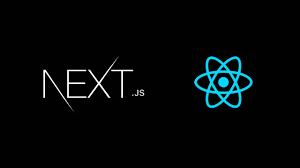
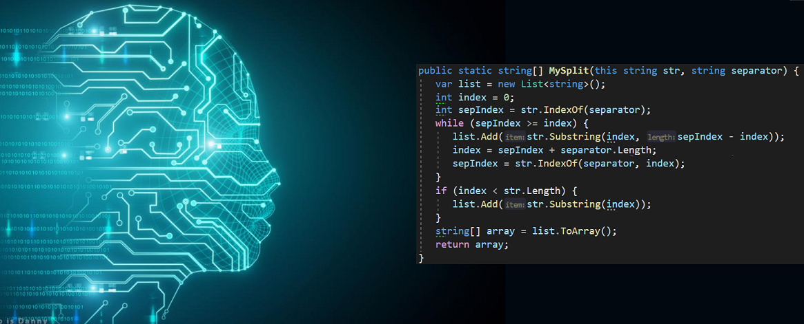

My Roadmap for AI Engineering
Introduction
This is a beginners guide on how to get started with AI Engineering, this roadmap is amazing for university students. But it is not just restricted to students, anyone who is interested in Computer Science or coding can do follow this roadmap :)
The Roadmap
To start with, we have to understand what AI Engineering is really made of, it's actually 70% software/web development and 30% AI (or Applied AI). This roadmap is going to show you how to learn both these domains efficiently and marry them together.
- Learning Web Dev from scratch
- Learning React and NextJS
- Python plus AI Foundations

Start with basics of web development. YES that means you will have to learn the boring old HTML,CSS and Javascript, altough AI can do it very well, you as a programmer must know and understand the code AI spits out for that the basics are very important.

Next up, you have to learn React and NextJS, by doing so you will have officially completed the frontend part of web development. But as a AI Enginner that isn't enough. You need to know how to inculcate AI systems and algorithims to your softwares or websites.
I dont know much about React and NextJs as I am in the beginning of this journey but you can definately click the link below and check out more details on itThe website given is the official NextJS forum website.
View Details on React and NextJS

This is where you actually get into the AI part of AI Engineering, it's going to be less of "fancy and looks" from now on and more of core AI logic and coding